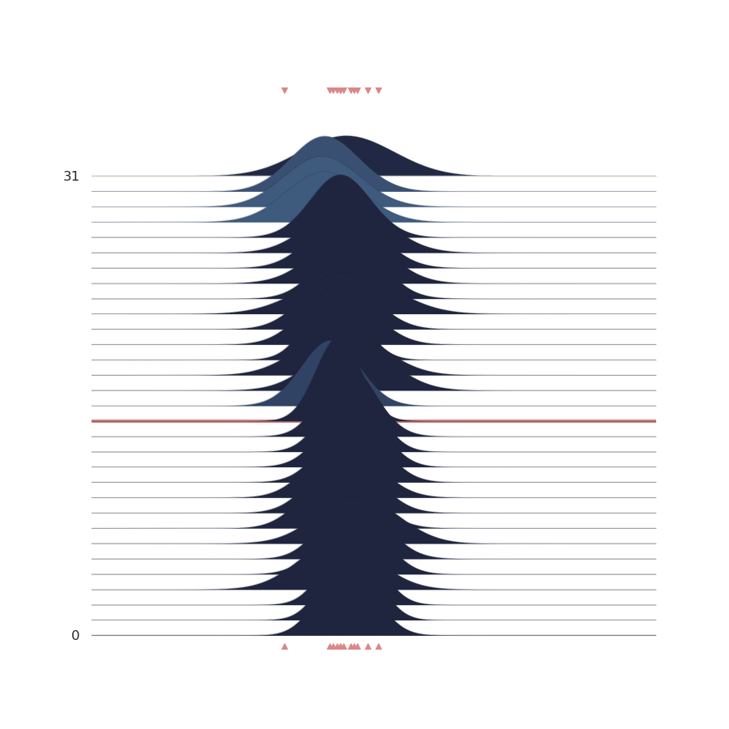

Note
Click here to download the full example code
5 2 - Introduction PyMC3.¶
# Importing GemPy
import gempy as gp
# Importing auxiliary libraries
import os
import numpy as np
import matplotlib.pyplot as plt
import pymc3 as pm
import arviz as az
from gempy.bayesian import plot_posterior as pp
from importlib import reload
from matplotlib.ticker import StrMethodFormatter
Model definition¶
This is to make it work in sphinx gallery
Out:
Active grids: ['regular']
Active grids: ['regular' 'topography']
Setting kriging parameters to their default values.
Compiling theano function...
Level of Optimization: fast_compile
Device: cpu
Precision: float64
Number of faults: 0
Compilation Done!
Kriging values:
values
range 1.3e+04
$C_o$ 4.2e+06
drift equations [3]
geo_model.modify_surface_points(2, Z=1000)
gp.compute_model(geo_model)
Out:
Lithology ids
[3. 3. 3. ... 1. 1. 1.]
def plot_geo_setting_well():
device_loc = np.array([[6e3, 0, 3700]])
p2d = gp.plot_2d(geo_model, show_topography=True, legend=False)
well_1 = 3.41e3
well_2 = 3.6e3
p2d.axes[0].scatter([3e3], [well_1], marker='^', s=400, c='#71a4b3', zorder=10)
p2d.axes[0].scatter([9e3], [well_2], marker='^', s=400, c='#71a4b3', zorder=10)
p2d.axes[0].scatter(device_loc[:, 0], device_loc[:, 2], marker='x', s=400, c='#DA8886', zorder=10)
p2d.axes[0].vlines(3e3, .5e3, well_1, linewidth=4, color='gray')
p2d.axes[0].vlines(9e3, .5e3, well_2, linewidth=4, color='gray')
p2d.axes[0].vlines(3e3, .5e3, well_1)
p2d.axes[0].vlines(9e3, .5e3, well_2)
p2d.axes[0].set_xlim(2900, 3100)
plt.savefig('well.svg')
plt.show()
plot_geo_setting_well()
# Thickness measurements
# ----------------------
y_obs = [2.12]
y_obs_list = [2.12, 2.06, 2.08, 2.05, 2.08, 2.09,
2.19, 2.07, 2.16, 2.11, 2.13, 1.92]
np.random.seed(4003)
Normal-several points¶

with pm.Model() as model:
mu = pm.Normal('$\mu$', 2.08, .07)
sigma = pm.Gamma('$\sigma$', 0.3, 3)
y = pm.Normal('$y$', mu, sigma, observed=y_obs_list)
mu
Out:
$\mu$
sigma
Out:
$\sigma$
y
Out:
$y$
Sampling¶
Out:
Auto-assigning NUTS sampler...
Initializing NUTS using jitter+adapt_diag...
Sequential sampling (2 chains in 1 job)
NUTS: [$\sigma$, $\mu$]
█
█
Sampling 2 chains for 1_000 tune and 1_000 draw iterations (2_000 + 2_000 draws total) took 3 seconds.
█
Out:
arviz.data.io_pymc3 - WARNING - posterior predictive variable $y$'s shape not compatible with number of chains and draws. This can mean that some draws or even whole chains are not represented.
az.plot_trace(data)
plt.show()
reload(pp)
p = pp.PlotPosterior(data)
p.create_figure(figsize=(9, 3), joyplot=False, marginal=False)
p.plot_normal_likelihood('$\mu$', '$\sigma$', '$y$', iteration=-1, hide_bell=True)
p.likelihood_axes.set_xlim(1.90, 2.2)
p.likelihood_axes.xaxis.set_major_formatter(StrMethodFormatter('{x:,.2f}'))
for tick in p.likelihood_axes.get_xticklabels():
tick.set_rotation(45)
plt.show()
reload(pp)
p = pp.PlotPosterior(data)
p.create_figure(figsize=(9, 3), joyplot=False, marginal=False)
p.plot_normal_likelihood('$\mu$', '$\sigma$', '$y$', iteration=-1, hide_lines=True)
p.likelihood_axes.set_xlim(1.70, 2.40)
p.likelihood_axes.xaxis.set_major_formatter(StrMethodFormatter('{x:,.2f}'))
for tick in p.likelihood_axes.get_xticklabels():
tick.set_rotation(45)
plt.show()
Joyplot¶
%matplotlib inline
Join probability¶
sphinx_gallery_thumbnail_number = 6
reload(pp)
p = pp.PlotPosterior(data)
p.create_figure(figsize=(9, 5), joyplot=False, marginal=True, likelihood=True)
p.plot_marginal(var_names=['$\mu$', '$\sigma$'],
plot_trace=False, credible_interval=.93, kind='kde')
p.plot_normal_likelihood('$\mu$', '$\sigma$', '$y$', iteration=-1, hide_lines=True)
p.likelihood_axes.set_xlim(1.70, 2.40)
plt.show()